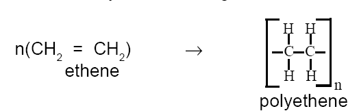

From ancient times, man has been using many naturally available substances for various purposes. Cotton, silk and jute are some of the materials used to prepare fibres and clothes. Shikakai is used for cleaning. There is a long list of products like gum, resin, dyes, wood and many more which are very useful to us. In ancient days all needs of human beings were fulfilled by naturally available substances. Catering to the needs has become difficult due to increase in population, limited availability of natural materials and long duration required for their production. Hence there is a great demand for alternatives to natural materials. Materials not available in nature but produced by using naturally available raw materials, are called synthetic materials. Nowadays we come across many synthetic materials such as plastics, cement, glass, fibres, ceramics. Let us study some of these synthetic materials in this chapter.
Polythene, nylon and terylene are some of the materials that are commonly used in our daily life. These synthetic materials are called polymers. (The words ‘poly’ means many and ‘meros’ means parts) They are prepared by using some naturally available materials. Do you know how polythene is made? A number of ethene molecules chemically combine together to form a giant molecule.
Compounds which are formed by the union of a very large number of
molecules of a simple compound or simple compounds united in a repetitious
manner are called polymers.
The simple compounds which build up the polymer molecule are called
monomers.
Polymerisation : The process in which two or more molecules of a simple
compound unite together to form a new compound is called polymerisation.
Types of polymers : All polymers are not synthetic; some are found in
nature. Proteins, carbohydrates, fats and nucleicacids are some of the natural
polymers. They are the essential components of our food. The polymers which
are available in nature are natural polymers. Some of the commonly used
polymers such as nylon, terylene are not found in nature; they are synthesised.
They are synthetic polymers.
Synthetic polymers are classified into 1) addition polymers and (2)
condensation polymers.
Addition polymerisation> is a process in which several molecules join
together to form a giant molecule during the reaction. There is no elimination
of molecules. They are prepared from unsaturated monomers. Eg. Polythene
and polyvinyl chloride (pvc).
Polymers obtained by the condensation reaction between monomers are
called condensation polymers. The polymerisation in which several monomers
form a polymer with the elimination of some simple molecules during the reaction
is called condensation polymerisation.
The condensation involves elimination of molecules like water, methanol
etc. Leading to linking of polymers. Nylon and terylene are condensation
polymers.
Some important polymers, their uses and the monomers from which they are
formed, are listed below:
Plastics are polymers which possess plasticity at some processing stage.
The word plastic is very popular. A number of articles made up of plastic are
widely used in our daily life. Plastic materials are strong and more durable.
They are less corrosive and do not react with the atmospheric air. Plastics can
be shaped easily. All these properties of plastic has made it very popular. That
is why plastics have replaced glass, wood, metal, rubber, leather etc.
A plastic is a synthetic material manufactured by the polymerisation of
organic substences which can be moulded in to desired shape when hot.
Plastics are of two types (1) Thermo plastics (2) Thermosetting plastics.
Certain plastics soften on heating and harden on cooling. They can be
moulded and re-moulded easily by heating. Plastics which lose their shape on
heating are called thermoplastics. Polyvinyl cloride, Polystyrene are examples
for thermo plastics.
Plastics which set on heating and become irreversibly hard on cooling,
are known as thermosetting plastics. Eg : Bakelite, silicones, epoxy-resins.
Uses : polymers popularly termed as plastics, are
substitutes to many structured materials like glass,
wood, rubber, metal, clay, leather and so on. These
are cost effective and have better quality compared
to their natural substitutes. They are more popular
because their properties can be manipulated easily
to suit the requirements.
Recycling of plastics : Plastic is not decomposed by microorganisms. It is not
biodegradable. Plastic waste causes pollution. It is very difficult to dispose them
off. The polution due to plastic waste can be prevented to some extent by
recycling. Recycling is the process of using the material again by reprocessing.
Steps involved in re-cycling are :
1. Collection of waste plastic materials.
2. Separating thermosetting and thermoplastic materials.
3. Softening of thermoplastics.
4. Upgrading the quality by refining.
5. Re-moulding.
Cement is an important synthetic material.
It is the chief component of building materials.
Chemically, cement is a mixture of calcium
silicate and calcium aluminate, with small amount
of gypsum salt.
The essential raw materials used in the manufacture of cement are clay
and lime stone. Gypsum (calcium sulphate) is used to regulate setting rate.
Manufacture of cement : Finely powdered ground clay and limestone are mixed
with water. This homogeneous mixture is called slurry. It is introduced into a
rotary kiln (Fig 18.1). Hot air at about 1873K is blown from the lower end of
the rotary kiln. Due to high temperature the water present in the slurry evaporates.
At this temperature clay and lime stone combine chemically to form cement balls.
The cement balls so formed are called clinkers. Clinkers are taken out
of the kiln and cooled. Clinkers are then finely powdered by grinding and mixed
with 3% gypsum. Gypsum slows down the rapid setting of cement.
Setting and curing : Cement sets into a hard mass when mixed with water.
Therefore it makes an excellent binding material in construction work. The mixture
of sand and cement along with water undergoes many complex changes. The
first stage of setting takes place within 24 hours after adding water to the cement.
The second stage of setting requires about two weeks.
The subsequent setting of cement is achieved
by adding water. The method of hardening cement
by treating it with water is known as curing. During
curing cement absorbs water. Calcium silicate and
aluminates of cement are converted into a colloidal
gel. This process is exothermic; hence it requires
continuous water treatment.
Glass is one of the oldest synthetic
substances being used. Due to its transparent
and non-corrosive property, glass is widely
used in various fields. Chemically, glass is
a homogenous mixture of sodium silicate and
calcium silicate (Na2SiO2, CaSiO3, 4SiO2)
Manufacture of Glass : Sand, limestone and
sodium carbonate are the raw materials
required for the preparation of glass. Scrap
glass is also used along with other raw
materials. Hence re-cycling of glass is also
done.
A finely powdered mixture of raw
materials is introduced into a furnace
maintaind at a temperature of about 1973K.
Raw materials fuse and combine chemically
to form a mixture of calcium silicate and
sodium silicate.
Na2CO3 + SiO2 → Na2SiO3 + CO2
CaCO3 + SiO2 → CaSiO3 + CO2
The molten glass is cast in the mould
or blown into various shapes and cooled
slowly. On slow cooling, glass gains the
capacity to withstand stress and loses
brittleness. The process of slow cooling glass
is known as annealing.